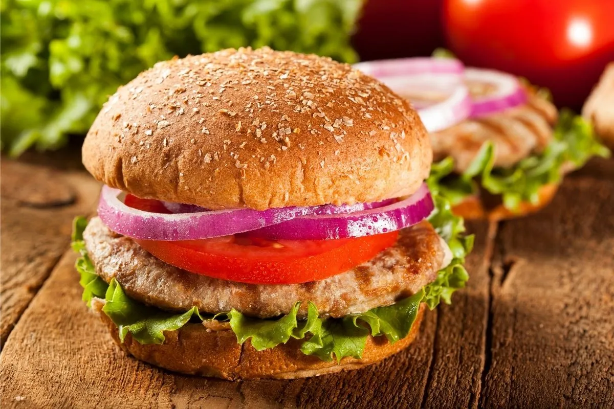

Turkey Burger Recipe

Description
This is easy to make burger, ready for 30 min and is very delicious.
Ingredients
- For the Meyer lemon-honey mustard
- 60ml Dijon mustard
- 1 heaping tbsp clover honey
- 1/2 tsp lemon zest
- 1 tbsp fresh orange juice
- 1 tsp fresh Meyer lemon juice, from Meyer lemons, if possible
- Salt and freshly ground black pepper
- For the burger
- 680g freshly ground turkey (90 percent lean) - not all white meat
- Salt and freshly ground black pepper
- 8 slices goat cheese, sliced 1-cm thick
- 4 sesame seed hamburger buns, split and lightly grilled
- Meyer Lemon-Honey Mustard
- Watercress
Steps
- Whisk together all ingredients, in a small bowl. Cover and refrigerate for at least 30 minutes and up to 24 hours to allow flavours to meld.
- Preheat the barbecue to high. Form the meat into 4 (225g) burgers. Season the burgers on both sides with salt and pepper, to taste.
- Griddle until cooked through, about 3 to 4 minutes on each side. During the last minutes of cooking add 2 slices of cheese to each burger, cover the barbecue and let the cheese soften slightly, approximately 1 minute.
- Put the burgers on the buns, drizzle with some of the mustard and top with a few sprigs of watercress.
Back to top
Back to main page